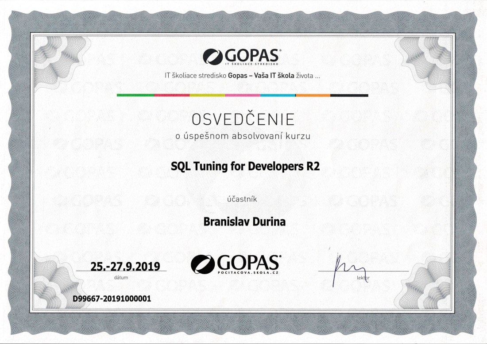
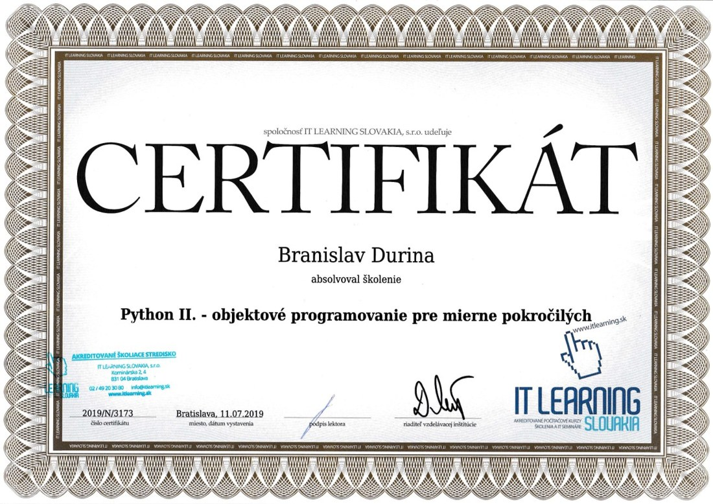

Backend & middleware
Python, Flask, PHP, Symfony, API integrations, background processes, XML/XSLT transformations.
Senior backend, data, payments, AI
Senior Application Developer and AI Architect at Nexi Central Europe. I build backend, middleware and database solutions for systems where accuracy, performance and operational reliability matter.
Profile
My natural territory is critical data processing: payment systems, Oracle DB reporting, PL/SQL tuning, middleware integrations and systems that must stay understandable for engineers and reliable in production.
I use Python as a practical tool for backend work, integrations, automation, reporting and prototyping. Flask fits the kind of focused services and APIs that should stay clear and lightweight. Alongside that, I build local AI workflows, multi-agent setups and RAG-style work over technical documentation.
Technology
Python, Flask, PHP, Symfony, API integrations, background processes, XML/XSLT transformations.
Oracle DB, PL/SQL, Oracle Forms, PostgreSQL, MySQL, SQL tuning, reporting, data architecture.
Payment processing, banking systems, loan systems, telemetry, D2000, enterprise data flows.
Local LLMs, agentic workflows, AI-assisted analysis, Python automation, Git/GitHub.
Experience
Senior Application Developer, AI Architect
Development and analysis of large application and database solutions in payment and financial systems. Focus on Oracle/PLSQL, reporting, backend processes, automation and practical AI workflow implementation.
Developer Analyst
Backend for loan systems, data architecture, PostgreSQL/PLSQL, telemetry systems with D2000, SMS payment and parking systems, industrial GSM modems, PHP and Symfony.
Developer Analyst
Development and maintenance of banking systems in Oracle Forms 4.5/6.1 and Oracle DB 8/9/10, including changes for Slovakia's euro transition.
Developer, technician, administrator
Web and intranet applications, portals, server and LAN administration, technical support, mobile technologies and communication protocols.
Certificates
Professional Certificate, Google/Coursera, November 17, 2024
Verify certificateGoogle/Coursera, November 17, 2024
Verify certificateGoogle/Coursera, September 22, 2024
Verify certificateGoogle/Coursera, June 30, 2024
Verify certificateGoogle/Coursera, June 9, 2024
Verify certificateGoogle/Coursera, April 29, 2024
Verify certificateGoogle/Coursera, March 31, 2024
Verify certificateVanderbilt University/Coursera, February 4, 2024
Verify certificateUniversity of Michigan/Coursera, June 14, 2021
Verify certificateGOPAS, September 2019
Instructor-led professional trainingIT Learning Slovakia, July 2019
Instructor-led professional training

Contact